01새살침 · Micro-needling
손상 조직에 통제된 신호를 보냅니다
패인 흉터 아래에는 단순한 빈 공간이 아니라 섬유 유착과 당기는 힘이 남아 있습니다. 정밀하게 조정된 자극은 그 구조를 풀어내고, 피부가 다시 차오를 수 있는 회복 신호를 만듭니다.
Pathway
자극→성장인자 분비→섬유아세포 활성→콜라겐 재편
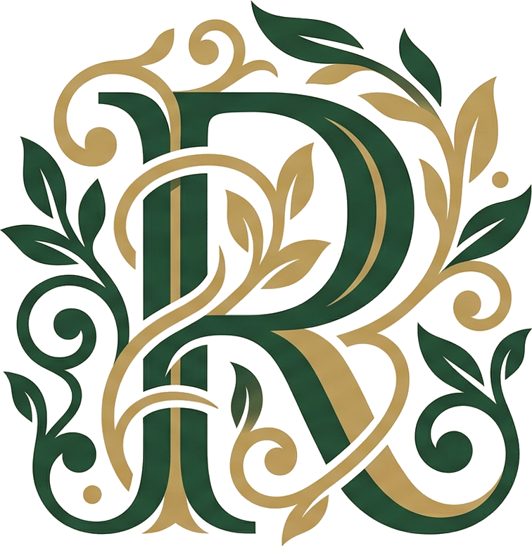
리커버 강남은 AI 피부 분석과 의학적 피부재생 관점으로
피부의 결, 흔적, 생활 리듬을 읽고
회복 조건과 순서를 정리합니다.
선릉역 7번 출구 앞 5층 · AI 피부 회복 조건 상담 준비 중
At a Glance
피부 신호 · 아래 구조 · 회복 순서. 결과보다 먼저, 필요한 기준을 정리합니다.
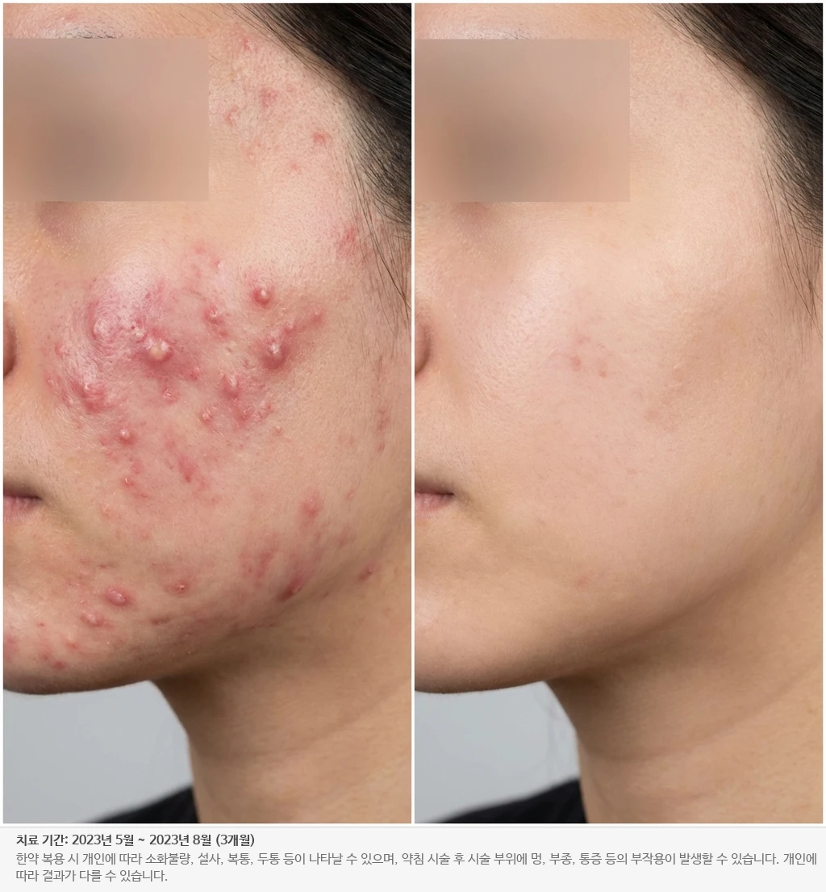
20대 여성 · 대학생
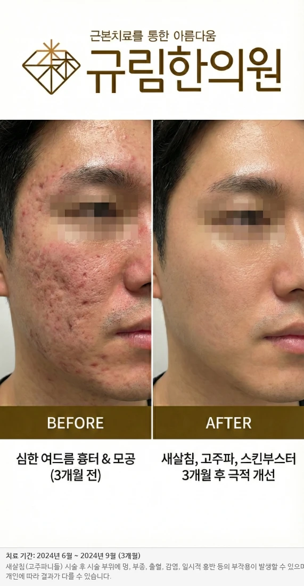
30대 남성 · 직장인
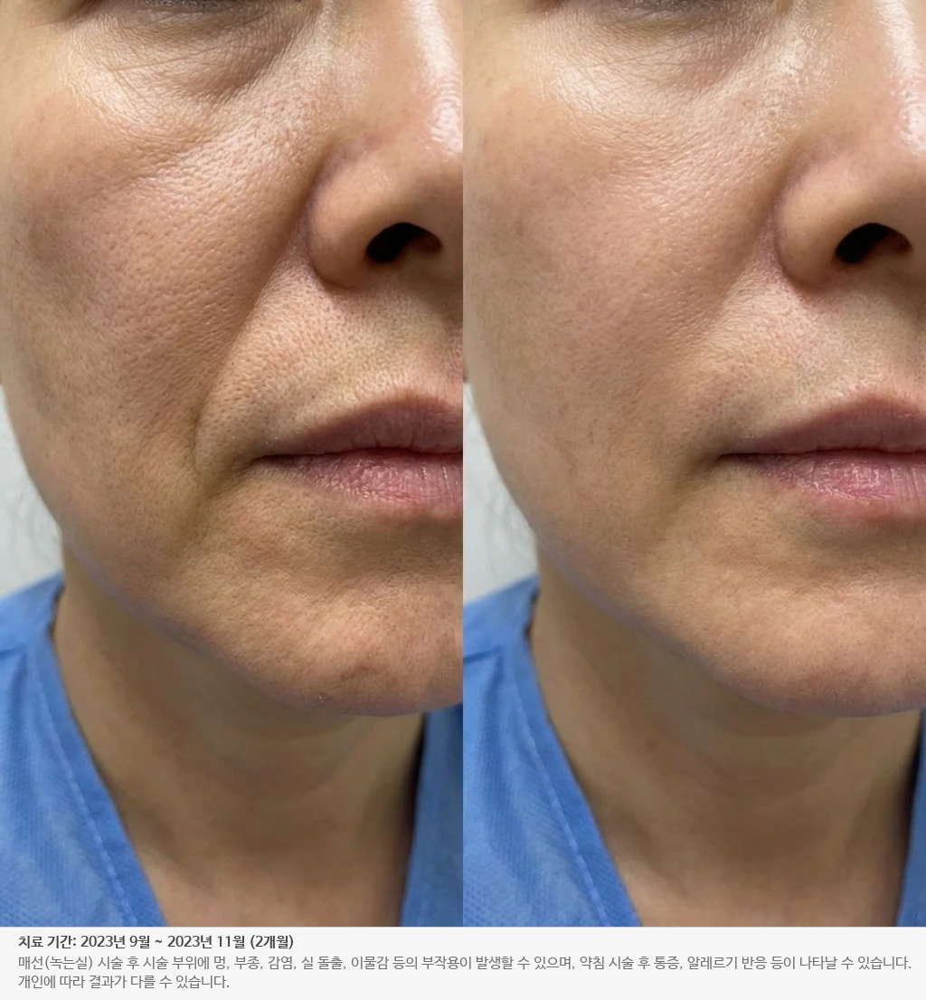
40대 여성 · 교사
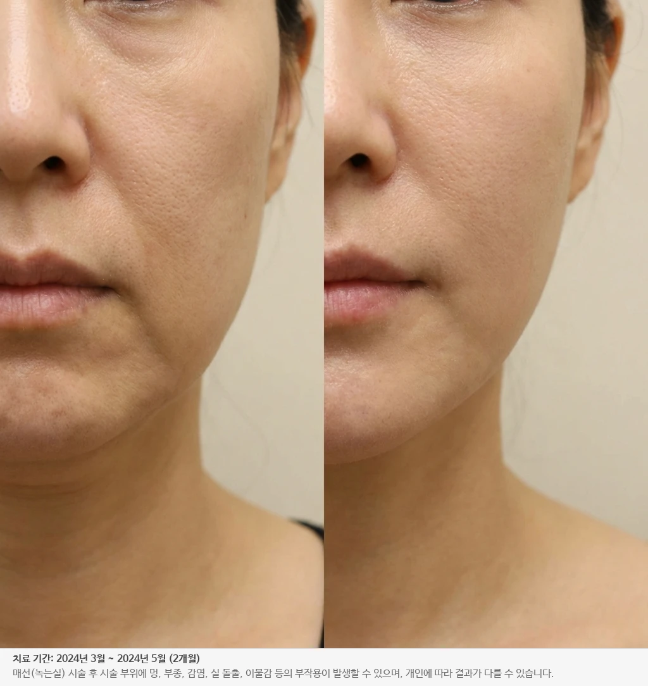
50대 여성 · 주부
* 실제 비용과 회복 기간은 RECOVER BASELINE 상담 후 개인별 상태에 따라 안내됩니다.
* 첫 상담은 시술 결정을 서두르기보다, 피부 상태와 회복 순서를 이해하기 위한 기준 정리 과정입니다.
Recovery Method
Read, Restore, Record. 리커버는 피부를 바꾸기 전에 왜 무너졌는지, 무엇부터 회복해야 하는지, 어떤 순서가 필요한지를 정리합니다.
읽다
AI 분석과 문진으로 피부의 결, 붉음, 흉터, 생활 리듬을 읽습니다. 회복은 관찰에서 시작됩니다.
조건을 맞추다
더 많이 자극하기보다 회복될 환경을 먼저 정돈합니다. 필요한 자극과 간격만 차분히 제안합니다.
기록하다
상담과 변화 기록을 남기고 다음 회복의 순서를 조정합니다. 한 번의 반응보다 지속 가능한 흐름을 봅니다.
METHOD ARCHITECT
Dr. Han Jung-woo, KMD
데이터로
읽는다
AI 분석으로 피부 신호를 보고
흔적과 반복의 패턴을
상담의 기준으로 남깁니다.
RECOVER AI
손으로
설계한다
흉터 아래 구조와 회복 반응을
해부학적으로 해석하고
필요한 자극의 순서를 정합니다.
RECOVER SCAR
Founder & Method Architect
Recovery Records
피부 변화는 한 장의 전후 사진보다, 어떤 구조를 읽고 어떤 순서로 회복했는지에 더 가깝습니다. 리커버는 그 과정을 기록합니다.
※ 본 사례는 동의를 받은 실제 환자로, 개인별 반응 차이가 있을 수 있습니다.
Recovery Notes
같은 흉터와 자국도 피부 아래 구조, 회복력, 이전 시술 이력에 따라 다른 순서가 필요합니다. 리커버가 상담에서 어떤 기준으로 읽고 설계하는지 보여드립니다.
Observation · 관찰
환자분은 "흉터"를 주호소로 오셨지만, 실제로는 흉터 하나의 문제가 아니었습니다. 박피성 시술 반복으로 약해진 장벽과 염증 후 색소침착이 결점감을 더 키우고 있었고, 같은 증상이라도 원인이 다르면 먼저 해야 할 일이 달라집니다.
피부 신호 분석Judgment · 판단
많은 분들이 "더 강한 시술로 해결하자"는 기대를 갖고 오십니다. 하지만 이 환자분께는 정반대의 처방이 필요했습니다. 첫 한 달간은 어떤 자극성 시술도 중단하고, 한약과 침치료로 피부 안쪽에서 장벽을 복원하는 기간을 두었습니다. 환자분은 처음엔 의아해하셨지만, 2주 차부터 홍반이 눈에 띄게 가라앉기 시작했습니다.
체질 기반 한약 처방Protocol · 프로토콜
한 달간의 내부 회복기 이후, 피부 두께와 탄력의 기준선을 다시 확인했습니다. 그때 비로소 새살침을 2주 간격으로 6회 진행했습니다. 흉터 조직에만 선택적으로 작용하도록 자극 강도를 조정했고, 중간 중간 한약 처방으로 재생 환경을 유지했습니다.
새살침 · 맞춤 강도Why Not · 선택하지 않은 길
일반적으로 이 시점에 색소 제거 레이저를 병행하는 것이 업계 표준입니다. 하지만 환자분의 피부는 이미 레이저에 과반응하는 상태였고, 추가 열자극은 재발 위험을 높일 수 있었습니다. 대신 체질 분석에서 도출한 맞춤 한약으로 색소 대사 경로를 자연스럽게 활성화하는 방향을 선택했습니다. 느리지만 안전한 길입니다.
Non-invasive approachRECOVER RECORD · Baseline Sheet · 회복 관찰지 No. 01
BeforeDay 0 · 초진
AfterWeek 12 · 3개월
* 동일 조명과 각도에서 남긴 회복 기록 예시입니다. 점수는 상담 기준을 설명하기 위한 내부 지표이며, 개인별 반응은 다를 수 있습니다.
3개월 후 결과
"메이크업 없이도 밖에 나갈 수 있게 됐어요." 환자분이 마지막 진료에서 해주신 말씀입니다. 흉터 가시성은 초진 대비 크게 줄었고, 피부 장벽 자체가 건강해져 이제는 유지 관리만으로 충분한 상태입니다.
−68%
흉터 가시성
+41%
장벽 기능
0건
재발 사례
— RECOVER NOTEReviewed by Dr. Han
* 위 노트는 리커버의 판단 방식을 이해하기 위한 상담 예시입니다. 실제 계획과 회복 반응은 개인의 피부 상태와 생활 리듬에 따라 달라질 수 있습니다.
"약은 피부를 고치지 않습니다.
시간이, 그리고 몸이 고칩니다."
열여덟 살, 대학 시험을 앞두고 얼굴 전체에 염증성 여드름이 번졌습니다. 피부과 약을 복용한 지 두 달째 되던 날, 얼굴은 붉게 잠잠해졌지만 속은 한없이 무너지고 있었습니다. 약을 끊자마자 두 배로 터져 나왔던 그날의 얼굴을, 저는 아직도 기억합니다.
처방전을 덮고 할머니 댁으로 내려갔습니다. 할머니는 한마디 말도 없이 제 얼굴을 들여다보시더니, 거친 손으로 턱을 받쳐 올리셨습니다. "속이 차서 그래." 그날 저녁 상에 올라온 건 쓴 약이 아니라 따뜻한 죽 한 그릇과, 아궁이에서 끓여낸 이름 모를 탕제 한 잔이었습니다.
삼 주가 지나자 피부는 스스로 가라앉았습니다. 놀랍지도 않았습니다. 그저 몸이 제 리듬을 되찾았을 뿐이었으니까요. 저는 그때 깨달았습니다. 피부를 표면이 아니라 회복의 리듬으로 보는 의학의 길을 선택하게 된 순간이었습니다.
저는 본디 엔지니어가 되고 싶었습니다. 숫자와 패턴이 사람보다 다루기 쉽다고 믿었고, 실제로 몇 년은 코드와 데이터 안에서 살았습니다. 의학을 공부하면서도 그 버릇은 쉽게 놓이지 않아, 레이저와 루페 대신 얼굴의 픽셀을 들여다보는 법을 배웠습니다. 지금의 RECOVER AI 엔진은 그 시기의 집요함이 남긴 결과물입니다.
개원 직전까지도 저는 두 가지 저녁을 번갈아 보냈습니다. 하나는 병원 닫은 후 불 꺼진 진료실에서 환자의 얼굴 사진을 펼쳐놓고 한참을 들여다보던 저녁, 다른 하나는 데이터셋을 돌려놓고 에러 로그를 읽던 저녁. 그 두 저녁이 하나로 포개어졌을 때, 리커버를 시작해도 되겠다고 생각했습니다.
이십 년이 지난 지금도 저는 같은 원칙을 지킵니다. 서두르지 않는다는 것, 누르지 않는다는 것, 그리고 무엇보다 환자 스스로의 회복력을 믿는다는 것. 리커버 강남은 그 믿음 위에 세워졌습니다.
당신의 피부에도, 기다릴 줄 아는 시간이 필요합니다.
그 시간을, 저희가 함께 보내드리겠습니다.
RECOVER BASELINE
강한 시술부터 시작할 필요는 없습니다. 몇 가지 질문으로 지금 피부가 먼저 회복해야 할 조건과 상담에서 확인할 기준을 정리해드립니다.
Question 01 · 주된 고민
지금 거울을 볼 때 제일 먼저 눈에 들어오는 것을 선택해주세요.
Question 02 · 이전 경험
시술 이력은 현재 상태를 판단하는 중요한 단서입니다.
Question 03 · 현재 상태
아침에 일어났을 때와 세안 직후의 느낌을 기준으로 선택해주세요.
Question 04 · 선호 방향
정답은 없습니다. 개인 성향에 맞는 프로토콜을 제안하기 위한 질문입니다.
Your Baseline · 회복 기준
Your Twin · 가장 비슷한 케이스
Recommended Path · 추천 시작점
Caution · 주의 사항
* 본 자가 체크는 방문 상담을 위한 가이드입니다. 정확한 판단과 치료 여부는 리커버 기준 상담 후 결정됩니다.
상담 전 확인할 피부 신호와 우선순위를 정리해드립니다. 이후 내원 시 더 정확한 기준으로 이어집니다.
입력하신 내용을 바탕으로
상담 전 확인할 회복 기준을 정리해드릴게요.
For Those Who've Tried Everything
리커버를 찾는 분들의 72%는 타 병원에서 이미 시술을 받아본 경험이 있습니다. 우리는 그 피로를 이해하고, 처음부터 다시 묻는 것에서 시작합니다.
Before Recover
At Recover
Before You Decide
오기 전에 가장 많이 물어보시는 세 가지 질문에
먼저 답해드립니다
Q · 01
다른 곳에서 효과를 못 봤는데,
여기서는 다를까요?
Q · 02
고가의 패키지를
또 결제해야 하나요?
Q · 03
이미 피부가 예민해졌는데
치료 받아도 괜찮나요?
"잘못된 건 환자분이 아닙니다.
단지 맞는 방법을 아직 만나지 못했을 뿐이에요."
— 리커버 강남 회복 기준
Radical Transparency
개원 전이지만, 원장이 지난 15년간 진료한 1만 2천여 건의 기록 중 솔직하게 공유드리는 세 가지 유형입니다. 이런 분들에게 저희는 도움이 되지 않거나, 다른 접근을 권해드립니다.
중요한 행사를 앞두고 3일·일주일 안의 극적 변화를 요청하시는 경우, 저희는 시술을 받지 않습니다. 의학적 재생 치료는 최소한의 세포 리듬과 회복 시간이 필요합니다. 그 기대를 채울 수 없다면 먼저 거절드리는 것이 정직한 일이라고 믿습니다.
→ 즉시 효과를 우선하시는 경우 타원을 안내드립니다.
진피 하부까지 굳어진 오래된 아이스픽·박스카 흉터일수록 표면만 깎아내는 접근으론 재발하기 쉽습니다. 저희는 자체 보유한 레이저·고주파를 한약·새살침과 순서대로 결합해, 굳은 조직을 풀고 그 자리에 새살이 차오르도록 설계합니다. 오래된 흉터일수록 이 순서가 더 중요합니다.
→ 도구 결합 · 순서 설계
갑작스러운 붉은 반점, 통증을 동반한 병변, 체중 급변, 전신 증상이 의심되는 경우 저희는 시술을 보류하고 상급 종합병원 진료를 우선 권해드립니다. 어떤 의학적 치료도 만능이 아니며, 순서를 지키는 것이 환자를 위한 판단입니다.
→ 협력 의료기관 소견서 발행
"받지 않아야 할 시술을 거절하는 것이,
받을 시술을 제대로 하는 것보다 중요합니다."
— 리커버 강남 진료 원칙
Recovery Anatomy
리커버는 시술명을 먼저 고르지 않습니다. 흉터 아래 구조, 피부 장벽, 내부 리듬을 함께 보고 회복이 시작될 조건부터 정리합니다.
01새살침 · Micro-needling
패인 흉터 아래에는 단순한 빈 공간이 아니라 섬유 유착과 당기는 힘이 남아 있습니다. 정밀하게 조정된 자극은 그 구조를 풀어내고, 피부가 다시 차오를 수 있는 회복 신호를 만듭니다.
Pathway
02맞춤 한약 · Herbal Formula
피부가 예민하거나 염증이 반복되는 상태에서는 외부 자극보다 내부 환경 정리가 먼저일 수 있습니다. 리커버는 체질과 생활 리듬을 함께 보며 피부가 반응할 수 있는 회복 환경을 다집니다.
Pathway
03약침 · Pharmacopuncture
피부 상태에 따라 국소 자극이 필요한 지점이 있습니다. 약침은 색소, 열감, 순환처럼 한 지점에 몰린 신호를 세밀하게 다루며, 새살침과 한약 사이의 정교한 연결점이 됩니다.
Pathway
Device-first · Recovery-first
빠른 자극이 필요한 피부도 있고, 먼저 쉬어야 하는 피부도 있습니다. 리커버는 어떤 도구를 쓸지보다 언제, 왜, 얼마나 쓸지를 먼저 결정합니다.
Device-first Approach
Recover Approach
RECOVER METHOD NOTE
도구는 많을수록 좋은 것이 아니라, 필요한 순간에 정확히 쓰일 때 의미가 있습니다. 표면 색소처럼 빠른 정리가 이로운 경우와, 진피 깊이의 반복 문제처럼 회복 조건부터 세워야 하는 경우는 다릅니다. 리커버는 그 순서를 결정하는 클리닉입니다.— RECOVER METHOD · 리커버 강남
References
근거의 방향
* 상담에서 설명하는 회복 원리의 큰 축
2023
미세 자극과 진피 리모델링
Microneedling · Collagen Induction
통제된 미세 자극은 피부가 새 조직을 만들도록 돕는 회복 신호가 될 수 있습니다.
2022
염증 후 자국과 내부 회복 환경
Barrier · Inflammation · Pigment Rhythm
반복 염증과 색소는 표면 문제만이 아니라 장벽, 순환, 생활 리듬과 함께 보아야 합니다.
2024
기록 기반 개인화 상담
RECOVER AI · Baseline Tracking
분석은 시술명을 자동으로 정하는 도구가 아니라, 피부 신호를 같은 기준으로 비교하기 위한 기준선입니다.
2021
국소 자극과 피부 장벽 반응
Pharmacopuncture · Local Response
국소 자극은 염증, 열감, 순환 신호를 세밀하게 관찰하며 조절해야 하는 영역입니다.
* 위 내용은 상담에서 회복 원리를 설명하기 위한 요약입니다. 실제 치료 여부와 순서는 리커버 기준 상담 후 개인별 상태에 따라 결정됩니다.
서두르지 않는 회복이
가장 빠른 길입니다
The Slow Medicine · In Nature's Rhythm
Scar Recovery
패인 흉터 아래의 섬유 유착, 당기는 힘, 피부 장벽과 회복 반응을 함께 읽고 필요한 자극과 회복 간격을 설계합니다.
Scar Anatomy & Saesalchim Recovery
흉터의 표면보다 회복이 멈춘 이유를 봅니다. 패인 흉터 아래의 섬유 유착, 당기는 힘, 회복 반응을 해부학적 시각화로 설명하고, 새살침을 포함한 의학적 피부재생 관점으로 필요한 자극과 회복 간격을 설계합니다.
Facial Asymmetry
비수술 방식으로 얼굴의 균형을 되찾습니다. 근막과 골격의 불균형을 정밀 분석하여 자연스러운 대칭을 회복합니다.
Thread Lifting
매선을 활용한 자연스러운 리프팅. 피부 속 콜라겐 생성을 촉진하여 처진 피부의 탄력을 되돌립니다.
Anti-aging
30~50대를 위한 맞춤 의학적 안티에이징. 세포 수준의 회복을 통해 피부 노화의 흐름을 자연스럽게 되돌립니다.
Constitutional Diet
의학적 체질 분석 기반의 건강한 체중 관리. 개인의 체질과 생활 리듬에 맞춘 접근으로 지속 가능한 변화를 이끌어냅니다.
Why Recover
같은 피부 고민이라도, 접근 방식이 다르면 결과가 다릅니다.
리커버 새살침은 캐뉼라 니들과 노코 니들의 설계를 융합한,
피부 재생에 최적화된 우리만의 도구입니다.
THIS IS A 리커버 새살침 · Cannula × Non-Coring
우리는 도구를 신뢰합니다.
손에 쥐는 것이 가벼울수록,
그 무게는 환자에게 전해지지 않습니다.
— RECOVER METHOD NOTE
Process
시술을 서두르기보다, 읽고 정리하고 기록한 뒤 필요한 순서를 정합니다.
01
피부 고민, 이전 시술 이력, 생활 리듬을 함께 듣고 첫 기준을 세웁니다.
02
피부 신호와 변화 패턴을 같은 기준으로 읽어 상담의 근거를 남깁니다.
03
지금 해야 할 것, 미뤄야 할 것, 먼저 회복해야 할 조건을 구분합니다.
04
매 회차의 반응을 기록하고 다음 자극의 강도와 간격을 조정합니다.
Recovery Journey
"언제부터 변화가 보이나요?" — 시술 후 90일의 여정을 한눈에.
시간 여행 · 미리 보기
Day 1 · 시술 직후
시술 부위에 가벼운 자극감이 있을 수 있으나, 대부분의 일상 활동은 정상적으로 가능합니다. 몸 안쪽에서 재생 신호가 이미 시작되고 있습니다.
체감 변화
가벼운 홍조·압박감이 수 시간 내 완화
내부 작용
콜라겐 합성 신호 활성화 개시
빠른 것은 얕은 것입니다. 한 달 만에 가라앉힌 피부는, 한 달 만에 다시 올라옵니다. 누르는 방식은 시간을 벌지만, 시간을 대신할 수는 없습니다.
피부 세포가 한 바퀴 도는 데 28일. 진피층 콜라겐이 재구성되는 데 90일. 자율신경이 제 리듬을 찾는 데 120일. 몸이 스스로를 다시 쓰는 데 걸리는 최소한의 시간, 그것이 우리의 여섯 달입니다.
그 여섯 달 동안 우리는 당신의 피부를 *되살리는* 것이 아니라, 되돌립니다. 원래 당신이 가지고 있던 상태로, 몸이 기억하고 있는 균형으로.
되돌아간 피부는,
다시 무너지지 않습니다.
Precision
한정우 원장의 흉터 관찰 경험은 리커버의 출발점입니다. 리커버가 고객에게 제공하려는 것은 한 사람의 감각이 아니라, 피부 신호를 읽고 회복 순서를 정리하는 반복 가능한 기준입니다.
HAN PREDICT에서 개발한 분석 체계를 바탕으로 피부 신호, 결, 탄력, 붉음의 변화를 같은 기준으로 읽어 상담의 객관적 근거를 남깁니다.
진료 전후 변화를 정량적으로 기록하고 추적합니다. 감이 아닌 데이터로 회복 과정을 확인합니다.
체질, 생활 리듬, 피부 반응을 함께 읽어 개인에게 맞는 회복 순서를 수립합니다.
FIELD NOTES · Recover Record
첫 상담에서 남기는 기준 — 분석, 해석, 순서, 기록이 하나의 회복 흐름으로 정리됩니다
상담 산출물
회복 설계 방식
기준 상담
리커버 강남
Recovery Records
한 장의 전후 사진이 아니라 어떤 구조를 읽고, 어떤 순서로 회복했는지를 남깁니다.
“거울을 볼 때마다 어머니가 보여서 무서웠어요. 시술 후엔 친구들이 ‘너 뭐 했어?’ 가 아니라 ‘요즘 잘 지내?’ 라고 물어봐요. 그게 더 좋아요.”
SMAS층까지 자입한 매선의 장력으로 처진 피부를 즉시 들어 올리고, 새살침을 통해 진피 콜라겐의 자가 재생을 6개월에 걸쳐 유도했습니다. 필러 없이 본래의 골격선을 회복한 경우입니다.
20대 여성 / 대학생
사춘기 시절 심한 여드름으로 양 볼에 깊은 박스형 흉터와 롤링성 흉터가 혼재. 새살침 코라테라피와 스킨부스터를 병행하여 재생 공간을 확보했습니다.
패인 흉터의 구조와 회복 순서를 기준으로 기록
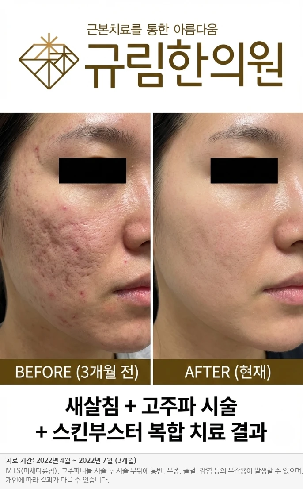
30대 여성 / 직장인
여러 피부과 시술에도 효과를 보지 못한 난치성 흉터. 미세 다륜 침(MTS)과 고주파 시술을 교차 진행하여 진피층 재생력을 극대화했습니다.
흉터 깊이 현저히 감소, 피부 탄력 증가
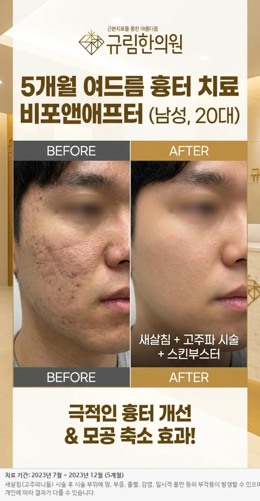
20대 남성 / 대학생
피지막이 두꺼운 피부 타입에 깊게 패인 아이스픽 흉터. 새살침을 집중 시술하여 흉터 경계면을 부드럽게 깎아내고 심부 재생을 유도했습니다.
울퉁불퉁한 요철이 평탄화, 모공 축소
30대 남성 / 직장인
경계가 뚜렷한 넓은 박스형 흉터가 관자놀이와 볼에 집중. 새살침으로 흉터 바닥을 들어올리고 프락셔널 고주파로 피부결을 정돈했습니다.
조명 아래 그림자 소실, 매끄러운 피부결
20대 여성 / 대학생
반복되는 염증성 여드름으로 얼굴 전체에 붉은 자국과 열감. 피부 장벽 강화 한약과 함께 염증 배출 약침 치료를 병행했습니다.
3개월 후 붉은기 소실, 건강한 피부 회복
50대 여성 / 주부
턱선이 무너지고 입가 옆 불독살로 인상이 강해 보이는 고민. 매선을 근막층(SMAS)까지 자입하여 처진 피부를 당겨 올렸습니다.
V라인 턱선 정리, 불독살 소실
40대 여성 / 교사
코 옆에서 입가로 이어지는 깊은 팔자주름. 채움 매선과 귀족 약침으로 필러 없이 자연스러운 볼륨감을 형성했습니다.
팔자주름 팽팽히 차오름, 앳된 인상으로 변화
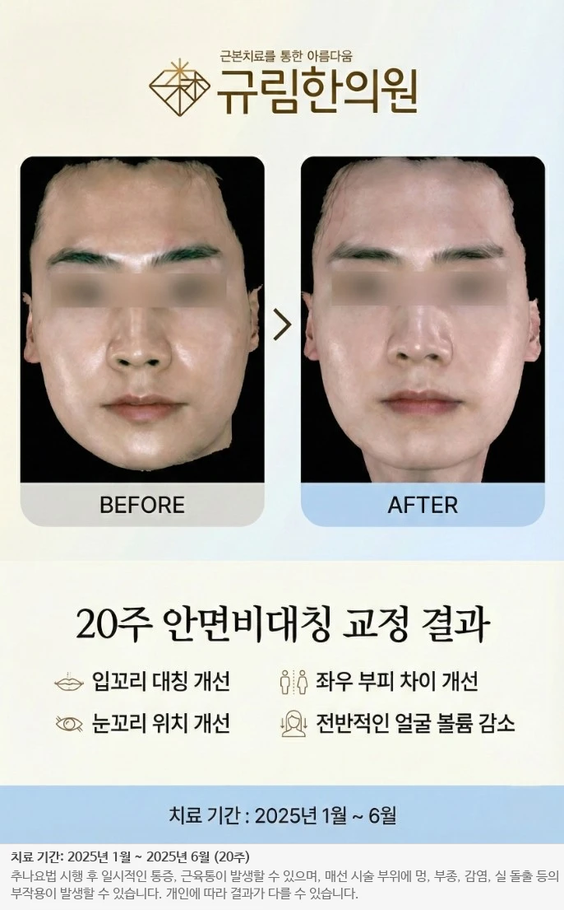
20대 남성 / 직장인
입꼬리 비대칭과 얼굴 중심선 틀어짐. 상부 경추 추나와 턱관절 균형 장치(TBA)로 골격의 중심을 바로잡았습니다.
입꼬리 대칭 회복, 눈꼬리 수평 정렬
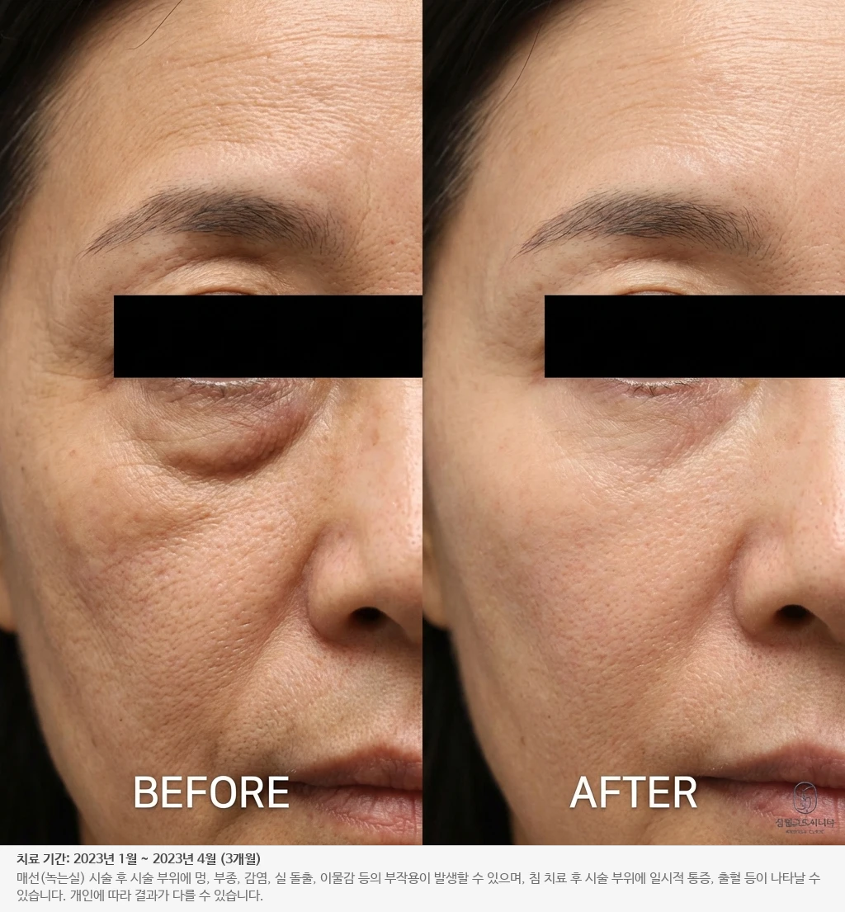
50대 여성 / 전문직
눈 밑 불룩한 지방과 잔주름으로 피곤해 보이던 인상. 눈 주변 혈자리 자극과 아이 매선으로 눈가를 탄탄하게 조였습니다.
눈 밑 평탄화, 또렷한 눈매 회복
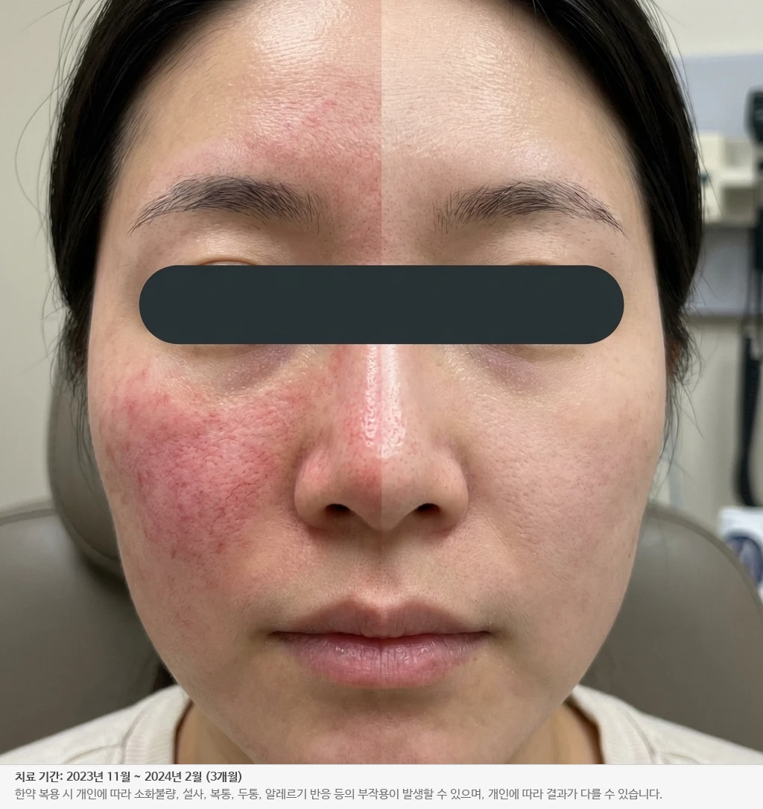
30대 여성 / 간호사
긴장만 해도 얼굴이 빨개지고 화끈거리는 만성 홍조. 상열하한 치료를 위한 청열 한약과 냉각 재생 관리를 진행했습니다.
열감 제어, 맑고 투명한 피부 톤 회복
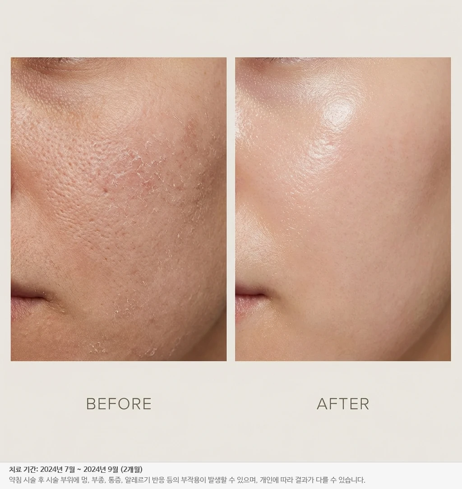
30대 여성 / 직장인
중요한 일정을 앞두고 피부가 푸석하고 기초 제품이 겉도는 고민. 물광 약침과 정안침 치료로 속부터 차오르는 광채를 만들었습니다.
세안 후에도 촉촉, 은은한 윤광
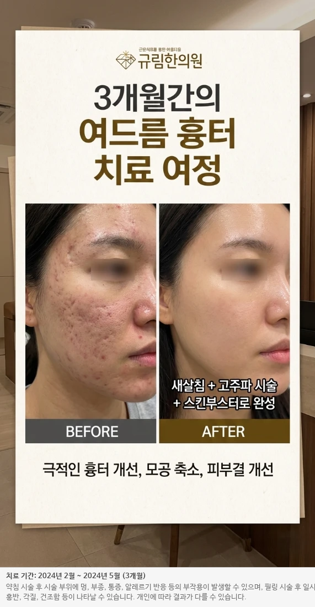
20대 여성 / 취준생
여드름 염증 후 남은 색소 침착과 얕은 흉터가 얼굴 전체에. 혈관 수축 약침과 표피 턴오버 정상화 필링을 진행했습니다.
피부 톤 균일화, 자신감 있는 면접 준비
치료 결과는 개인에 따라 차이가 있을 수 있습니다. 치료 기간: 2021~2025년 시술 사례.
리커버 강남은 아프지 않은 방식으로 치료합니다.
그 믿음은 공간에서부터 시작됩니다.
현재 이미지는 일러스트 플레이스홀더입니다. 개원 직전 실 공간 사진으로 교체될 예정이며, 각 프레임에는 감각별 상징 장면(향·정적·촉감·차·빛·시간)이 배치됩니다.
편백과 진피,
아침마다 새로 우리는 다시의 향
말하지 않아도
들리는 정적
표백하지 않은 린넨,
손에 닿는 편백 벤치
진료 전,
달이지 않은 감초차 한 잔
오후 세시,
창으로 스며드는 자연광
진료와 진료 사이,
당신만을 위해 비워둔 15분
Recovery Stories
리커버 강남이 상담에서 가장 먼저 정리하는 고민과 기준입니다.
二〇二五 · 晩秋
"5년 동안 두꺼운 화장으로 가리던 흉터가 6개월 만에 희미해졌어요. 처음으로 민낯으로 카페에 앉아 있었습니다. 거울이 무섭지 않아요."
— 정OO, 20대 · 여드름 흉터
二〇二六 · 初春
"긴장만 해도 붉어지던 얼굴이 자연스러워졌습니다. 무엇보다 '쉬게 하는 것이 먼저'라고 말씀해주신 원장님의 방향이 저를 달라지게 했어요."
— 강OO, 30대 · 만성 홍조
二〇二五 · 盛夏
"세 군데를 더 다녀봤지만 그대로였어요. 여기서 처음으로 '안 받는 편이 낫다'는 말을 들었습니다. 그때부터 믿기 시작했습니다."
— 조OO, 40대 · 난치성 피부
Baseline
Read
Restore
Record
"여드름 흉터 때문에 스트레스였는데, 새살침 덕분에 피부가 매끈해졌어요! 5년간 두꺼운 화장으로 가리고 다녔는데 이제 쌩얼도 괜찮아요."
"컨실러로도 안 가려지던 홍조가 사라졌습니다. 긴장만 해도 빨개지던 얼굴이 이제는 자연스러운 피부색이에요. 자신감 회복!"
"피부과 다 다녀봐도 안 됐는데, 속부터 치료하니 다르네요. 겉만 치료하던 게 왜 안 됐는지 이제야 알겠어요."
"안면비대칭 때문에 사진 찍기 싫었는데, 이제 자신 있게 찍어요! 입꼬리 대칭이 맞춰지니 인상 자체가 달라졌습니다."
"이직 준비하며 피부 톤부터 정돈하고 싶어 찾았습니다. 운동 후 얼굴이 오래 붉어지던 것도 눈에 띄게 줄었고, 면접 자리에서 인상이 또렷해졌다는 평을 들었어요."
"피부 때문에 소개팅도 못 하겠다 싶었는데, 새살침 집중 치료 후 울퉁불퉁하던 흉터가 평평해졌어요. 모공도 작아졌습니다."
"턱선이 무너지고 불독살 때문에 인상이 강해 보여 고민이었는데, 매선 시술 후 V라인이 살아났어요. 살 빠졌냐는 질문을 받습니다."
"깊은 팔자주름이 필러 없이 자연스럽게 차올랐어요. 귀족침과 매선의 조합이 신기합니다. 인상이 훨씬 밝아졌다는 이야기를 들어요."
"업무상 클라이언트 미팅이 잦은데 '피곤해 보인다'는 말을 자주 들었어요. 눈가 치료 후 인상이 훨씬 밝아졌고, 과하지 않아 주변에선 '뭐 달라졌지?'라고만 묻습니다."
"친절하고 꼼꼼한 진료 감사합니다. 원장님이 정말 꼼꼼하시고 설명도 잘 해주세요. 믿고 다니는 곳이에요."
원장 선생님께,
처음 진료실 문을 두드리던 날이 떠오릅니다. 세 곳의 피부과를 전전하고 마지막이라는 심정으로 갔던 날이었습니다. 얼굴을 드는 것이 하루 중 가장 힘든 일이었던, 그런 계절이었습니다.
선생님께서는 제 얼굴을 오래 보시지 않았습니다. 대신 제 손목을 잡으시고, 언제부터 잠이 얕았는지, 위장은 괜찮은지 조용히 물어보셨지요. 저는 그때 처음으로, 피부가 아니라 제가 진료받고 있다는 느낌을 받았습니다.
3개월이 지났고, 6개월이 지났습니다. 빠른 변화는 없었습니다. 다만 어느 아침, 거울 앞에서 무심코 미소 짓고 있는 저를 보았습니다. 그것이 첫 신호였습니다.
이제 저는 피부 때문에 모자를 쓰지 않습니다. 화장을 잊고 외출하는 날도 있습니다. 그 평범함이 얼마나 귀한 것인지, 잃어본 사람만이 압니다.
선생님, 감사합니다. 제 얼굴을 고쳐주신 것보다, 기다려주신 것에 감사드립니다.
Q&A
새살침은 리커버의 중요한 흉터 회복 기술입니다. 다만 첫 상담에서는 시술명을 먼저 정하지 않고, 흉터 아래 구조와 피부 회복 조건을 확인한 뒤 필요한 자극과 회복 간격을 설계합니다.
매우 미세한 침을 사용하여 대부분의 환자분들이 경미한 따끔함 정도만 느끼십니다. 시술 직후 일상 활동이 바로 가능합니다.
흉터의 깊이, 유착 방향, 피부 장벽 상태, 회복 반응에 따라 달라집니다. 리커버는 첫 상담에서 필요한 것과 미뤄야 할 것을 구분하고, 회복 순서를 먼저 안내합니다.
RECOVER BASELINE으로 시작합니다. AI 피부 분석과 리커버 기준 상담을 통해 피부 신호, 흉터 구조, 생활 리듬을 확인하고 지금 해도 되는 것과 미뤄야 할 것을 함께 정리합니다.
미용 목적의 시술은 건강보험 적용이 되지 않습니다. 다만 화상·외상 흉터 등 일부 항목은 보험 적용이 가능하며, 상담 시 자세히 안내드립니다.
First Visit
RECOVER BASELINE
AI 피부 분석 + 원장 회복 상담
Direct Reply
24시간 내 회신
원장이 직접 답변드립니다
Founding Patients
프리오픈 상담
선릉역 7번 출구 앞 · 5층
RECOVER BASELINE은 피부 신호, 흉터 구조, 생활 리듬, 이전 시술 경험을 함께 확인하고 지금 필요한 회복 순서를 정리하는 첫 상담입니다.
수집된 개인정보는 상담 예약 및 회신 목적으로만 사용되며, 상담 완료 후 즉시 파기됩니다.
서두르지 않으셔도 괜찮습니다. 저희가 먼저 연락드리겠습니다.
Contact
첫 상담은 시술을 정하는 시간이 아니라 피부가 회복될 조건을 정리하는 시간입니다. 리커버 강남은 피부 신호, 흉터 구조, 생활 리듬을 함께 보고 필요한 순서를 제안합니다.
Phone
02-000-0000
Online
recover-clinic.kr
@recover_clinic
Hours · 핵심
월–금 10:00 – 19:00
토 10:00 – 15:00
Location
아래 약도 참조 ↓
선릉역 7번 출구 · 도보 1분
A Quiet Welcome
리커버에 처음 오시는 분들을 위한 짧은 준비 메모
번호 매겨진 단계는 절차가 아니라 리듬입니다. 편안한 걸음으로 오시도록, 예약 이후의 다섯 순간을 먼저 나누어 드립니다.
01ㅇ
Day 1 · 예약이 닿으면
하루 이내 전화 또는 문자로 원하시는 일정과 상담 주제를 여쭙습니다.
02이
D-1 · 하루 전 인사
방문 24시간 전, 약도·주차·복장 안내가 담긴 메시지를 보내드립니다.
03삼
D-Day · 문을 여시면
따뜻한 다시 한 잔과 함께 10분 정도 여유를 두고 문진표를 작성하실 수 있습니다.
04사
45 min · 마주 앉아
AI 피부 분석과 체질 확인을 바탕으로, 서두르지 않는 상담 시간을 드립니다.
05오
After · 댁으로
상담 요약과 맞춤 회복 플랜이 24시간 이내 문서로 따라 보내집니다.
Directions · 오시는 길
Address · 주소
서울특별시 강남구 역삼동 · 부일타워 5층
선릉역 7번 출구 도보 1분 · 엘리베이터 이용
Subway
2호선·수인분당선 선릉역
7번 출구 · 도보 1분
Bus
선릉역 정류장
간선·지선 다수 정차
Parking
건물 지하 · 2시간 무료
추가 30분 1,000원
Hours · 진료 시간
Before Your Visit · 모시는 자세
부담 갖지 마세요. 가볍게 읽어보시는 정도로 충분합니다.
메이크업은 가볍게
AI 피부 분석의 정확도를 위해 기초 선크림 정도가 적당합니다. 원내에 편안히 사용하실 수 있는 클렌징 공간이 마련되어 있습니다.
최근 6개월의 기록, 있으시다면
레이저·필러·복용 중인 약물 등 최근 받으신 시술이나 의료 이력을 간단히 메모해 오시면, 상담이 한결 빨라집니다. 없으셔도 괜찮습니다.
편안한 복장을 권해드립니다
목·어깨 진찰이 필요할 수 있어 라운드넥 계열이 편리합니다. 원하신다면 부드러운 린넨 진찰복으로 갈아입으셔도 좋습니다.
궁금한 마음, 그대로 가져오세요
치료 기간·비용·기대 효과까지, 어떤 질문도 좋습니다. 평균 45–60분의 상담 시간 안에 모두 답해드리는 것이 저희의 약속입니다.
피부는 결국,
시간이 만듭니다.
그 시간, 함께 드리겠습니다.
Transparent Pricing